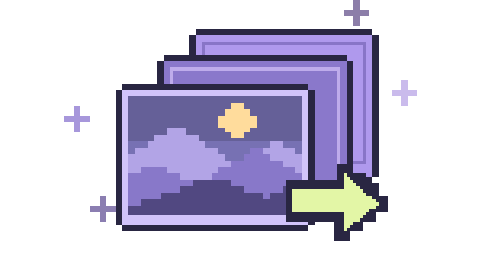

Pixelpress
Pixelpress IMAGE WORKSPACE
WebP Studio.
Turn your images into lightweight WebP files, right in your browser.
Image queue
0 files
Drop your images here
PNG, JPG, WebP, AVIF, or BMP
Files stay on your device
Export settings
WebP.webp
Smaller fileHigher quality
Image comparison
OriginalWebP
Estimated compression loss
File size
Dimensions
How is loss estimated?
We compare sampled areas of the encoded WebP with the image just before compression. The estimate is 100 × (1 − sampled RGB structural similarity). A lower value means a closer match in those samples. Resizing is shown separately under Dimensions.
Integrations
3 toolsBring WebP export into your workflow.